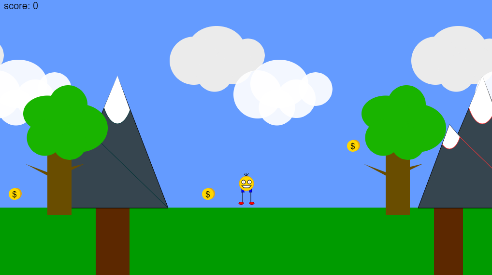

Ailya Sayed
Email: ailyasayed018@gmail.com
Phone: +44 7803 059860
LinkedIn: linkedin.com/in/ailya-sayed
Address: 9 Lakeside Drive, London, NW10 7GL
Professional Summary
Final-year student at Goldsmiths, University of London, with a robust foundation in analytical thinking, problem-solving, and technical proficiency. Gained experience in developing innovative solutions and analysing complex data sets through various projects and internships. Skilled in applying technological solutions and data analysis techniques to optimise processes and drive results. Currently seeking a graduate role to utilise my expertise and contribute to impactful projects within a dynamic professional environment.
Work Experience
GCSE Mathematics Tutor
Team Up | Nov 2024 - Present
- Delivered tailored lessons aligned with the national curriculum for Year 11 students.
- Created engaging lessons, monitored progress, and provided constructive feedback.
Student Engagement Agent
Goldsmiths, University of London | Sept 2024 - Present
- Collaborated with the Student Success team to build a vibrant and inclusive student community.
- Organised over 10 events and networking opportunities, enhancing student engagement by 25%.
Cyber Security Analyst Intern
Zimperium | Jun 2024 – Aug 2024
- Gained hands-on experience with Mobile Security (MTD & MAPS).
- Contributed to customer Proof of Concepts (PoCs), produced detailed value reports, and presented findings to senior management.
GCSE Mathematics and Science Tutor
Self-employed | Oct 2022 – May 2023
- Delivered tailored lessons in Mathematics and Science through virtual lessons.
- Leveraged strong communication skills to ensure a supportive learning environment.
Education
BSc Computer Science – Predicted 1st
Goldsmiths, University of London | Sept 2022 – Jun 2025
- Year 1: Introduction to Programming, Fundamentals of CS, Front End Web, Problem Solving, Graphics, Numerical Mathematics, Symbolic Mathematics, Programming Project.
- Year 2: Algorithms 1 & 2, Fundamentals of CS, Java for Industry, Extended Java, Dynamic Web Applications.
- Year 3: Databases and The Web, Security and Encryption, Machine Learning, Data Mining, Final Year Project: Mobile Safeguarding Application.
A Levels
Aylesbury High School | Sept 2020 – Jun 2022
- Subjects: Biology, Chemistry, Mathematics
Skills
- Programming: HTML, CSS, JavaScript (p5.js, Node.js, Express, EJS), MySQL, Java, C#, Dart, Flutter
- Data Analysis and Visualisation
- Problem-solving and Analytical Thinking
- Teamwork and Collaboration
- Attention to Detail
- Language Proficiency: English, Urdu, Hindi
Certificates
- Microsoft Excel
- Microsoft PowerPoint
- Active Listening
- Public Speaking
- Finance
- Cyber Security
- Machine Learning
- Generative AI
Projects
Year 2
Hangman - May 2024
- GitHub
- A simple Hangman game made using Java.
- Learned how to create a GUI for a more interactive experience.
Assembly, The GitLab Collaboration Software - Mar 2024
- GitHub
- A group project for second year of university.
- Links a user's GitLab account to our website to create group chats.
LDNConnect, A Forum Web Application - Dec 2023
- GitHub
- Designed a forum app for Londoners.
- Made using EJS, MySQL and CSS.
Year 1
Drawing Application - May 2023
- GitHub
- Collaborative project to create a drawing website.
- Inspired by the simple design of MS Paint and its various tools.
Future Portfolio - Jan 2023
- GitHub
- A portfolio website looking 10 years into the future.
- Developed my skills in HTML, CSS, and JavaScript.
Platformer Game - Dec 2022
- GitHub
- A platformer game made using p5.js!
- Uses keyboard input to control a self-made character through a game level.
